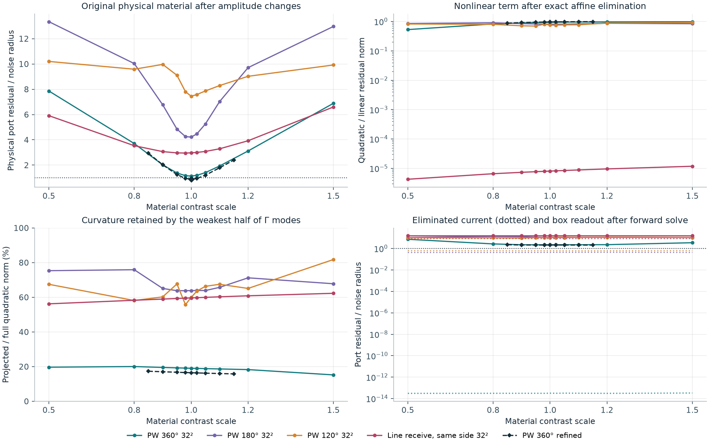

实际网格的外积曲率谱与部分消元
二维标量 TM 的 21 份存档带噪观测、10 个独立材料上，所有计算接收截断均得到一个外积曲率左零方向，即归一化常数向量。24² 网格的 \(\Gamma_N\) 有 575 个可分辨正奇异值，32² 有 1023 个。投影后余下的是源互易性。它在这些布阵上有非零信息，但完整照明时只约束 45 或 66 个复方向，完整列最小奇异值均为 0。因此，这些数据不能通过全局投影的一次线性最小二乘唯一恢复电流。
观测和冻结对照
| 复用入口 | 材料数 | 带噪观测及布阵 |
|---|---|---|
MAX-STRUCT R13 r13_fresh48 |
2 | r13_fresh_0000 半环 12×24、r13_fresh_0001 全环 12×48。两件 24²→24²、已公开评分。 |
MAX-STRUCT R15 independent24 |
3 | r14_new_0000 全环跨网格 36²→24²、r14_new_0002 半环、r14_new_0003 全环。R15 已使用的 R14 观测。 |
Z-ALG R16 src/cohorts.py |
3 | r10_twod_0000, r10_twod_0001, r11_crossgrid8_0000 的 48²→24² 与 24²→24² 配对。全环 12×48，皆为 R16 实际载入的公开带噪观测。 |
SRAP srap_main24 |
2 | s2d_001, s2d_010，每件使用六套 10×20 布阵的存档仿真读数。平面波全、半、120°窗，线源弧接收与同侧/对侧线阵。原研究细网格生成、32² 反演。 |
这些都是原研究已采样的项目仿真复场。本表按材料去重，照明子集、阵列、对比扰动、同材料跨网格配对及截断是同一观测或材料的条件重复。只打开公开算子、带噪读数与历史解的材料数组。本节不读干净读数、真值或留出端口。SRAP 接收算子直接从原观测文件加载，内部传播复用 legacy_la.PaperModel.G，并以历史 FFT action 交叉检查。每份具体来源、原正演网格及端点选择已写入计算回执。SRAP 的 Fresnel 实测使用依赖发射源的通道掩码，整套数据无法直接作为本实验所需的同一矩形 \(S\) 的每源测量。
每份观测测试原有接收数、按 \(\sigma_S/\sigma_{S,\max}\) 截断 \(10^{-2},10^{-4},10^{-6}\)，以及逐接收模的噪声检测前缀。用固定的近均匀索引选 2、4、6、8、10、12 个原有发射，超出原源数者跳过，照明能量和源归一化保持原单位。截断接收构造相应的新 \(N\)。全物理端口残差始终用原 \(S,Y\) 检查。冻结配置 · 逐条件数据
怎样确定 \(\Gamma_N\) 只有一个左零方向
本节使用复内积。\(G\) 先取互易对称部并去对角。同一固定对角项在每行外积中精确抵消，材料正演保留完整原 \(G\)。对于 \(V=G_{\mathrm{off}}N\)，令 \(P=NN^*\)、\(K=VV^*\)、\(C=NV^*\)，外积 Gram 为
\[ H=\Gamma_N\Gamma_N^*=P\circ K-C\circ C^*. \]
程序以 Householder 变换压到 \(\mathbf 1^\perp\)，直接保存其全部带符号特征值与误差区间。互易性给出精确代数恒等式 \(\mathbf 1^T\Gamma_N=0\)。这一方向作为结构零单独保存。其余方向仅在 Gram 特征值严格大于形成、压缩与特征分解的总误差界时开方。完整谱由这 \(n\) 个奇异值和矩阵尺寸给出。
形成误差按复内积的保守标准浮点模型估算。对长度 \(k\) 的内积用 \(\gamma_{8k+8}\)，绝对乘积由行范数乘积控制。\(V\) 第 \(i\) 行的误差上界取 \(\gamma_{8n+8}\|G_{i,:}\|_2\|N\|_F\)。把它传到 \(K,C\)、Hadamard 乘法和减法后取 Frobenius 上界。限制后的分解用实际 \(\|HU-U\Lambda\|_F\) 及 \(\|U^*U-I\|_F\)，把正交化和 Hadamard 运算的误差计入 Weyl 区间。计算针对读入的浮点网格及按该接收阈值定义的数值子空间。误差界使用标准舍入模型，物理参数扰动和连续 Maxwell 网格误差超出该界的范围。
独立核对以 \(\Gamma_N^*v\) 的交替双线性式计算范数，用 \(N^T\operatorname{diag}(\bar v)V\) 的反对称部分作 Frobenius 检查，无需构造空间二阶子式矩阵。该核对覆盖最小、最大和固定随机方向，另用直接 rank-two 扰动检查曲率上界与常数的相消。
互易性方程实际约束多少电流
若 \(\Gamma_N\) 的左零空间由 \(\mathbf 1/\sqrt n\) 张成，投影残差等价于 \(J^TB-B^TJ\) 的上三角除以 \(\sqrt n\)，其中 \(B=E_0\)。只剩的线性算子适用于任意 \(J_0\)。令 \(M=N^T B\) 并作复 SVD \(M=U\Lambda V^*\)。以 \(Z=\bar U W V^*\) 表示有效部分，则每对 \(a<b\) 的独立行只作用在 \(W_{ba},W_{ab}\)，上三角系数是 \(\lambda_b W_{ba}-\lambda_a W_{ab}\)。因此 \(L_Y\) 的约化行奇异值为
\[ \sigma_{ab}=\frac{\sqrt{\lambda_a^2+\lambda_b^2}}{\sqrt n},\qquad \operatorname{rank}_{\mathbb C} L_Y=\binom{s}{2}-\binom{s-r}{2},\quad r=\operatorname{rank}_{\mathbb C}M. \]
完整 \(L_Y\) 的维数为 \(n\binom{s}{2}\times ds\)，其额外奇异值均为结构零。列零空间维数为 \(ds-\operatorname{rank}L_Y\)，因此识别下界 \(\alpha_Y\) 为零。复数模型实化会把非零奇异值和秩各重复两次。材料实盒约束仍需在原问题中执行。源码还独立组装每个完整照明条件下的 \(\binom{s}{2}\times ds\) 小行矩阵作 SVD，并用原外积导数直接 action 检查上述公式。
\(B\) 若由同址且校准一致的接收阵产生，即 \(B=S^T C\)，完整硬锁时 \(N^TB=0\)。这些线阵和平面波布置并不满足这一条件，观测中投影出来的互易性实际非零。其幅度由 \(N^T B\) 决定，且与 \(Y\) 的大小、噪声和对比度无关。若换为同支撑物理目标的不同对比度，投影仿射常数 \(\Pi\mathcal R(J_0)\) 与全残差的非线性部分可以随观测或电流改变。
完整照明、接收数值全秩时
| 阵列 | 暗坐标列数 | \(\Gamma_N\) 秩 | \(\sigma_{\Gamma,\min+}/\sigma_{\Gamma,\max}\) | \(L\) 数值行秩 | \(\sigma_{L,\max}\) |
|---|---|---|---|---|---|
| 24² 全环 12×48 | 6336 | 575 | 2.20×10⁻⁴ | 66 | 1.94×10⁻¹² |
| 24² 半环 12×24 | 6624 | 575 | 8.94×10⁻⁴ | 66 | 0.0611 |
| 32² PW360 | 10040 | 1023 | 0.190 | 45 | 0.135 |
| 32² PW180 | 10040 | 1023 | 0.0217 | 45 | 1.646 |
| 32² PW120 | 10040 | 1023 | 0.00726 | 45 | 1.970 |
| 32² 线源→弧接收 | 10040 | 1023 | 0.0222 | 45 | 1.60×10⁻⁵ |
| 32² 同侧线阵 | 10040 | 1023 | 0.0254 | 45 | 1.14×10⁻⁷ |
| 32² 对侧线阵 | 10040 | 1023 | 0.0254 | 45 | 2.246 |
\(L\) 的行秩以计算的 \(M\) 的比例阈值记录，表示所存谱的数值维数。24² 全环的 \(\|N^TB\|_F/\|B\|_F=1.01\times10^{-11}\)，在原入射尺度上几乎冗余。其最小计算约化奇异值约 \(7.60\times10^{-14}\)，受 \(N^TB\) 相消和接收子空间误差影响，应用判断用结构列上界和幅值，不把极小数值视为独立且稳定的物理观测。同侧与对侧线阵的 \(\Gamma_N\) 谱相同到浮点精度，互易行最大奇异值却相差约两千万倍。这是共有接收布局的核曲率与照明相对于接收行空间的关系不同所致。最有利的照明和截断依然只约束至多 1.042% 复电流坐标。24² 全环在保留 13 个接收模时 \(\sigma_{L,\max}\) 上升到 \(1.15\times10^{-3}\)，原始弱接收通道仍必须单独审计。
39 次独立 \(\Gamma_N\) 构造中，最小正平方奇异值与 Gram 总误差界的比例最低为 15.12，绝对正奇异值下界最小为 \(2.07\times10^{-5}\)。全接收下用 1% 最大奇异值作有效秩阈值，24² 全/半环仍有 563/571 个曲率方向，32² 各阵仍有 1022–1023 个。独立 \(\Gamma_N^*\) 直接 action 与 Gram 范数最大绝对差 \(4.77\times10^{-14}\)，\(L\) 小行矩阵与闭式谱最大相对差 \(3.74\times10^{-14}\)。用巨大硬锁电流直接评价整个外积导数再相消时，最差相对误差可达 2.63，这是极弱互易行的两大项相消。误差相对于未相消两项范数之和小于 \(7.57\times10^{-17}\)。报告的 \(L\) 谱由相消前已解析化简的互易式取得。

接收白化与带噪硬锁
R13、R15、R16 用存档每条复通道的 RMS sigma 白化，即 \(S/\sigma\)、\(Y/\sigma\)。SRAP 的噪声生成器把各向同性复高斯向量缩到存档半径 \(\delta\)，所以每条复通道的 RMS 是 \(\delta/\sqrt{ms}\)。两者均为标量白化，空间核保持相同。跨网格误差没有进入这项噪声白化。噪声筛选使用原始全照明矩阵的 \(\|u_j^*Y\|_2\)，在全接收模间经 Bonferroni 修正以 1% 作纯噪声充足性筛查。独立复高斯时采用 Gamma 尾，固定范数时采用 Beta 尾。保留从最大接收奇异值起连续超过阈值的前缀。该筛查表示数据能量可以辨别纯噪声，当前电流的稳定性仍由接收增益约束，模型误差需另计。
锁定全部数值接收模得到形式相容的复电流，但误差放大 \(\delta/\sigma_{S,\min}\) 在 24² 全环为 \(1.03\times 10^7\) 到 \(2.01\times10^7\) 原生电流范数单位。1% 相对截断后降到 1.25–2.44。SRAP 全环的 \(\sigma_{S,\min}/\sigma_{S,\max}=0.41\)，同物体半环为 \(2.0\times10^{-4}\)，120°窗为 \(2.3\times10^{-7}\)。s2d_010 的全环、半环、120°、同侧线、对侧线经噪声筛查分别锁定 19、12、8、6、7 个模。原始弱读数进入完整物理端口审计。所有截断保持 \(\alpha_Y=0\)，故降噪后全局线性唯一恢复仍然不成立。逐条件完整诊断
精确部分消元和真实扰动
保留常数投影后可以解 \(LZ=-\Pi R_0\) 的最小范数特解 \(Z_p\)。无须显式构造核基，对任意试探 \(Z_c\) 减去同样最小范数解 \(L^\dagger L Z_c\) 即可。实验以公开材料的精确非线性正演产生 \(J_c\)，令 \(Z_c=N^*(J_c-J_0)\)，构造 \(J_p+H\)，其中 \(J_p=J_0+NZ_p\)、\(H=N(I-L^\dagger L)Z_c\)。真实材料 \(J_c\) 与基于接收/互易投影的候选 \(J_p+H\) 分别登记。原始外积残差保留完整恒等式
\[ \mathcal R(J_p+H)=\mathcal R(J_p)+D\mathcal R(J_p)H+H\wedge G H. \]
第一组固定 1% 接收截断，预先指定历史种子或公开模板，在同一观测下改变材料对比倍率。231 组全部保留。原历史 residual 是相对 \(\|Y\|_F\) 的量。按原文件 \(\delta\) 再用完整正演换算后，预先指定的原种子和扰动均在噪声球外。99 个电流候选同时进入噪声球且满足互易线性方程，但实盒读回再正演的最小端口残差仍为 2.20δ。这 99 项的完整二次项与线性项范数比中位数为 0.802。最弱一半的 \(\Gamma_N\) 方向仍保留实际二次残差范数的中位数 63.9%，最高 98.2%。这些数字直接限制把剩余模式作为线性方程使用。保留所有剩余模式时，复算恒等式的最大相对误差 \(9.12\times10^{-15}\)。首次试验
第二组在第一次复核后追加。固定选取最接近原噪声球的 s2d_010__pw360_10x20，从存档的 Dual 30 s light 材料仅用原带噪端口做 20 步盒约束最小二乘。停止原因是迭代上限。复核物理材料从 1.134δ 降到 0.883δ，峰值为 3.117。沿同一材料轮廓取 0.98、1、1.02 倍，峰值 3.054、3.117、3.179，真实正演均在原噪声球内，残差分别 0.949δ、0.883δ、0.944δ。两端相对中心的实际物理端口变化为 0.347δ 和 0.336δ。材料、场和剩余曲率数组保存完整。
| 物理对比倍率 | 原物理端口残差 / δ | 仿射消元后完整二次项 / 线性项 | 最弱一半 \(\Gamma_N\) 方向内二次项 / 线性项 | 消元候选实盒读回再正演 / δ |
|---|---|---|---|---|
| 0.98 | 0.949 | 0.958 | 0.495 | 2.100 |
| 1.00 | 0.883 | 0.965 | 0.499 | 2.103 |
| 1.02 | 0.944 | 0.971 | 0.503 | 2.104 |
三组消元候选的电流端口残差均小于 \(3.20\times10^{-14}\delta\)，互易残差相对完整外积残差约 \(2\times10^{-16}\)，原本构闭合误差仍达 38.0–38.6%。同数据下只取仿射最小范数特解，实盒读回再正演为 9.292δ。这组有物理可行扰动的例子说明，部分消元能处理少数解析约束，但可靠成像仍取决于完整余项和物理约束。峰值扫描只覆盖该公开轮廓及其已测试尺度。追加原始数据 · 球内数组

三维和实测的有限单元变化下界
固定原物理端口和一个材料起点后，以下必要条件约束达到指定端口误差半径所需的最少材料改动单元。已知起点 \(J_0\) 和修改后的正演系统可逆，材料算子 \(D\) 的有限变化满足精确式
\[ \Delta J=(I-DG)^{-1}\Delta D(B+GJ_0),\qquad \Delta Y=S\Delta J. \]
只改 \(k\) 个单元时，\(\operatorname{rank}\Delta D\le bk\)。二维标量 TM 取 \(b=1\)，每个三维体素有三个 Cartesian 电流分量，取 \(b=3\)。若 \(R=Y-Y_0\)，任何可行端口改变量必须满足
\[ \left(\sum_{j>bk}\sigma_j(R)^2\right)^{1/2}\le\delta. \]
这是 Frobenius 范数下最接近秩 \(bk\) 矩阵的误差。它放松了原散射可达性、材料盒和支撑几何，所得最少改变数只是必要条件。下界为 0 表示给定端口子阵上的空气或起点已经在半径内。其余下界不表示足量的单元变化一定能达到目标。
| 数据和正演 | 存档观测 | 空气最少改动下界 | Dual 已存端点最少改动下界 |
|---|---|---|---|
| SRAP 半球阵，12³ 完整 dyadic | 12 个配对材料，32×16 复端口 | 9 件至少 2 体素，3 件至少 3 体素 | 11 件至少 1 体素，1 件为 0 |
| SRAP 面阵，12³ 完整 dyadic | 同 12 材料，32×16 复端口 | 12 件均至少 1 体素 | 9 件至少 1 体素，3 件为 0 |
| Fresnel Twin 8 GHz 连续掩码，60² TM | 同一实物的 61×4 共同测量子阵 | 至少 3 像素 | 0 |
| Fresnel Twin 8 GHz 交错掩码，60² TM | 同一实物的 84×2 共同测量子阵 | 至少 2 像素 | 0 |
SRAP 使用 vector/data/{hemi,plane_grid}_00–11.npz 的原带噪观测和 10% 定范数半径，原 vector/physics.py 在复双精度 CPU 重算 vector/predictions/..._Dual/materials.npz 的 light_180。两个阵列按同一 12 个独立材料配对。严格迭代阈值 \(10^{-10}\)，最大原方程残差 \(9.96\times10^{-11}\)。两个迭代精度所给端口差的两倍作为经验数值余量，最大为 \(1.15\times10^{-4}\delta\)，加入判定半径。结论针对原模型和指定噪声球，细/粗离散误差未另估。Dual 端点的端口残差/δ 中位数为半球 1.057、面阵 1.005。
Fresnel 先由掩码枚举发射子集和共同接收交集，选择实际通道数最大的矩形。连续及交错掩码分别使用 244 与 168 条真训练测量，每个全训练掩码原有 733 条，未读留出测量。取子阵时保持全训练 15% 诊断球的绝对半径，避免在缺道阵列下凭空缩小误差合同。原 PaperModel FFT-GMRES 用存档 Dual m_30_light 重算，最大状态相对闭合误差 \(6.19\times10^{-8}\)。连续和交错子阵上，空气端口残差分别为 4.83δ、3.16δ，Dual 为 0.872δ、0.608δ。插槽缺测依赖发射，给整个稀疏矩阵填零后做 SVD 会改变这一必要条件。两个掩码都是同一实物的子选择。
这项延伸墙钟 39.58 秒、CPU 20.79 秒。三维按两种精度共 768 个原正演 RHS，Fresnel 共 6 个原正演 RHS。空气的物理电流是精确零。保存每项端口矩阵、完整残差奇异值和秩尾范数，另存布局、端点与实际成本。逐例成本和谱 · 汇总表 · 端口数组
复现和成本
从 Inv_SLAM 根目录执行，数据位置由原始数据加载器及回执逐项列出。图、代码和诊断都可独立读取。逐观测发布 NPZ 包含完整数值谱，首次扰动的场与余项体积较大，保存在工作区 .artifacts/hc_cie_r2_20261128/spectra_states 并按键名登记。新增球内配对与物理边界的数组随报告同时保留。全部数组索引
Gaussian/.venv_nn/bin/python -B research/hc_cie_r2/src/spectra.py \
--states-output .artifacts/hc_cie_r2_20261128/spectra_states
Gaussian/.venv_nn/bin/python -B research/hc_cie_r2/src/spectra_feasible.py
Gaussian/.venv_nn/bin/python -B research/hc_cie_r2/src/spectra_figures.py
Gaussian/.venv_nn/bin/python -B research/hc_cie_r2/src/spectra_physical_limits.py
Apple Silicon macOS 复双精度、单 BLAS 线程，运行时工作区有其他研究作业。首次 21 份观测、570 组谱为墙钟 132.35 秒、进程 CPU 100.51 秒，包含压缩输出，峰值 RSS 829 MB。39 次不同 \(\Gamma_N\) 谱构造共墙钟 66.84 秒、CPU 54.44 秒。读取同一几何及保留秩的其他材料直接复用其 \(\Gamma_N\)。首次做 462 次完整二维矩阵正演和 5,016 个正演 RHS，全部用原算子。追加另有 21 次目标及梯度计算，每次 10 个正演与伴随 RHS，读回和审计再做 19 次独立正演。原历史端点的产生费用留在原研究，复算中只承担读入及新物理调用。运行回执 · 追加回执
将接收噪声传到互易方程后的有效方向数
在 5 份已跑的 R13/SRAP 观测上，固定同一观测和原噪声半径，分别复算保留所有数值接收模与 1% 相对截断。用公开材料重新正演得到参考电流 \(J_{\rm ref}\)，以其 Frobenius 范数的 1%、10%、100% 作为暗电流试探方向的规定幅度。R13 取原实权报告两份 CIE corrected 锚点，范数为半环 14.613、全环 16.155。SRAP 三个布局共用已有的全环公开校正材料，因入射波不同，得到全环 59.297、半环 59.056、同侧线 60.638。参考在原观测上的端口残差分别是 0.876δ、0.961δ、0.883δ、1.078δ、1.223δ。这些幅度只给谱实验定标，材料盒或合法暗电流的可达半径尚需单独证明。
设 \(K=V_c\Sigma_c^{-1}\)，\(\widehat Y=U_c^*Y\)，于是 \(J_0=K\widehat Y\)。剩余互易方程的右端取 \(J_0^TB-B^TJ_0\) 的上三角后除以 \(\sqrt n\)，符号不影响噪声谱。给定 \(M_Q=K^TB\)，变动 \(\eta_c=U_c^*\eta\) 的传播恰为复线性映射
\[ Q\eta_c=\frac{[\eta_c^TM_Q-M_Q^T\eta_c]_{a<b}}{\sqrt n}. \]
R13 复噪声协方差采用存档 \(\sigma^2I\)。SRAP 的定范数各向同性复噪声采用 \(\sigma^2=\delta^2/(ms)\)。二者的右端协方差都是 \(\sigma^2QQ^*\)，在截断后仍用原全观测球半径保守比较。保存了原行及 \(L\) 左奇异方向下的完整协方差。在原 \(L\) 奇异方向上，R13 半环的最大非对角噪声相关模为 0.998，SRAP 半环为 0.962。给每行同权或把这些行的噪声视为独立，均会漏掉这两例的相关结构。把固定噪声及实际 \(Y\) 先回代到 \(J_0\) 再直接算反对称量，与组装 \(Q\) 比对，最大相对差为 \(2.28\times10^{-9}\)。
逐模门。 在原 \(L\) 奇异方向 \(v_i\) 上比较 \(\rho\sigma_i(L)\) 和 \(\delta\|u_i^*Q\|_2\)，其中 \(\rho\) 为规定电流幅度。1δ 门用于与原一球尺度比较。2δ 门要求零扰动和指定扰动各容许一份噪声时，两球在该标量方向仍分离。逐模计数使用信号奇异值下界和噪声增益上界。这些计数不会把同时测试的行当成独立信息。CSV 同时保留按相关结构也有效的 99% Bonferroni 复单模噪声门。
联合门。 用 \(Q\) 的直接 SVD，仅对白化尺度超过组装及 SVD 绝对数值门槛的带噪行作 \(Q\) 增益归一化。联合白化后的最坏噪声半径以原 \(\delta\) 附加可计算的形成误差余量。另保存对 R13 复高斯用 \(\chi^2\)、对 SRAP 固定范数用 Beta 投影能量求得的 99% 联合统计门。噪声幅度在白化空间仍用原端口单位。按 \(M_Q\) 的源空间正交补显式求结构零噪行，先核算其残余数值泄漏，再在这些有效行的核内评估剩余白化谱，避免双计同一个电流方向。信号门槛对 \(N^TB\) 的相消、局部投影和白化放大保守留余量。全部 \(L\) 形成绝对门槛在 \(1.47\times10^{-12}\)–\(1.91\times10^{-10}\)，\(Q\) 门槛在 \(4.58\times10^{-11}\)–\(6.85\times10^{-4}\)。这些误差界针对已保存 \(S\) 的数值 SVD 定义的子空间。完整谱与实际门槛都另存。
下表的 r_noise 是联合 2δ 门的通过数，包含单列核对过的结构零噪行。括号给出占 \(ds\) 复暗电流坐标的比例。它描述在各给定幅度和冻结算子上的线性方向分辨，尚不包含材料先验、模型误差和非线性成像资格。
| 观测 | 接收保留 | \(ds\) | 1% 参考幅度 | 10% 参考幅度 | 100% 参考幅度 |
|---|---|---|---|---|---|
R13 半环 0000 |
24 | 6624 | 0 | 0 | 0 |
R13 半环 0000 |
9，1%截断 | 6804 | 8 (0.118%) | 25 (0.367%) | 45 (0.661%) |
R13 全环 0001 |
48 | 6336 | 0 | 0 | 0 |
R13 全环 0001 |
13，1%截断 | 6756 | 0 | 0 | 0 |
SRAP 全环 010 |
20，两切法相同 | 10040 | 0 | 0 | 27 (0.269%) |
SRAP 半环 010 |
20 | 10040 | 1 (0.010%) | 9 (0.090%) | 25 (0.249%) |
SRAP 半环 010 |
16，1%截断 | 10080 | 6 (0.060%) | 26 (0.258%) | 41 (0.407%) |
SRAP 同侧线 010 |
20 | 10040 | 0 | 0 | 0 |
SRAP 同侧线 010 |
10，1%截断 | 10140 | 0 | 0 | 0 |
R13 半环截断到 9 个接收模时，12 个照明的 \(M_Q\) 至少有 3 个源零方向，于是得到 3 个反对称结构零噪行。三档幅度都通过信号与舍入泄漏复核。原始伪逆下没有这种结构零。表内带噪子空间的计数是在扣除这三行的电流约束后获得。其余布局与截断没有结构性零噪方向，也没有需要人工置零的 \(Q\) 行。没有满足分辨门的极弱信号仍如实保留。例如 R13 全环硬锁时 \(\sigma_{\max}(L)=1.93\times10^{-12}\)，该极小响应和软件数值门槛同量级，三档均为零。对 1% 截断后 100% 幅度，全环的逐模 1δ 门可过 21 行，联合 2δ 门仍为零。采用不同门的数字提供不同判据。
原半环最小范数 \(J_0\) 的范数随全接收到 1% 截断，从 R13 的 \(3.57\times10^5\) 到 3.65、SRAP 的 1223 到 24.0。保留全部弱接收时，谱行数看上去未减少，噪声放大却远超原参考电流尺度。联合白化有时能找回低噪组合。比如 R13 半环截断在 1% 参考幅度上原 \(L\) 的单个方向均过不了 1δ 门，而联合 2δ 门仍有 8 个。五个布局中的任何一档最多只约束 0.661% 的暗坐标。这个改进仍不足以支持全局唯一线性恢复。
运行 Gaussian/.venv_nn/bin/python -B research/hc_cie_r2/src/noise_rank.py。单线程 CPU 增量复算包括 5 次参考正演共 54 个 RHS、10 组接收模式条件和矩阵行谱。墙钟 1.41 秒、CPU 1.40 秒。逐条件计数和比例 · 尺度、门槛与成本 · 完整协方差及谱